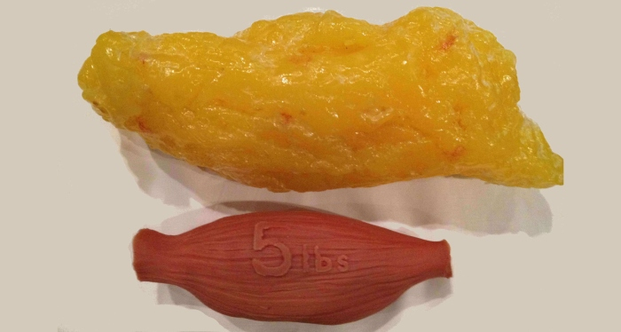
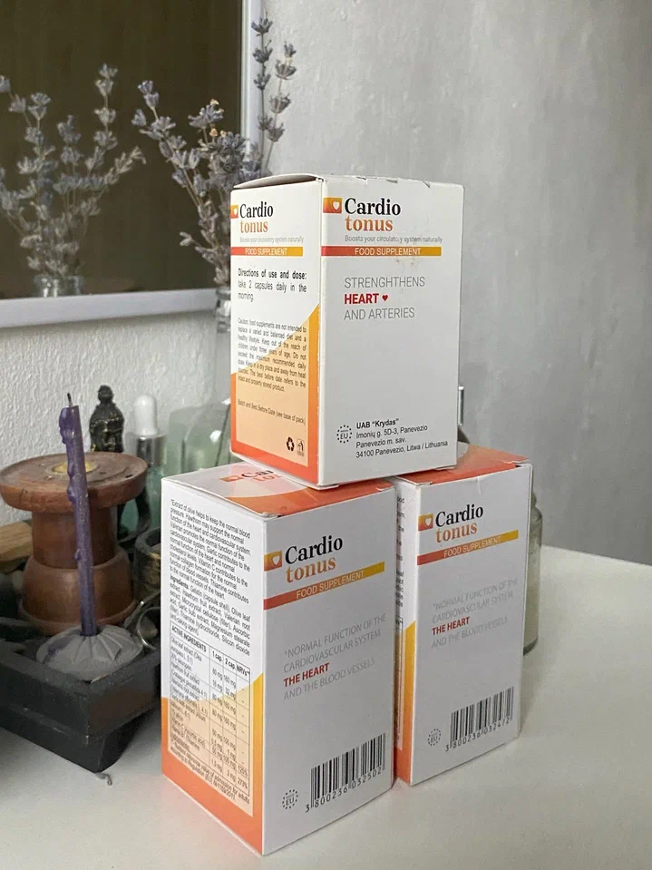
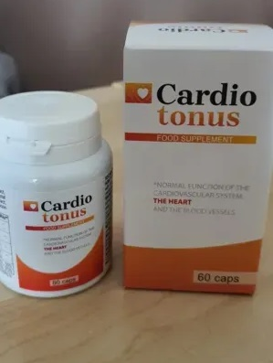

26°
15°


Dr. Franc Mihelič, Polonca Bučar + 49
Slavni slovenski kardiolog je z nami delil preprosto metodo.
Prof. Dr. Franc Mihelič je slovenski kardiolog in profesor. Znan je po zdravljenju ljudi brez tablet. Hkrati pa vsak njegov pacient ozdravi. Poleg znanih bolnikov iz Slovenije ga obiskujejo tudi bolniki iz drugih držav EU.
Prof. Dr. Franc Mihelič redko daje intervjuje in se skuša bolj posvetiti svojim pacientom. Vendar je imel dopisnik naše televizije res srečo - znan zdravnik je privolil, da odgovori na nekaj vprašanj za tiste bolnike, ki nimajo priložnosti obiskati njegove klinike.
PROF. DR. FRANC MIHELIČ JE PREPRIČAN, DA LAHKO PRAV VSAKDO OČISTI SVOJE KRVNE ŽILE IN NA TA NAČIN IZBOLJ A SVOJE ZDRAVJE IN POČUTJE. S takšnim čiščenjem se lahko znebimo nihanja krvnega tlaka in ozdravimo kar 9 kroničnih bolezni.
Zdravnik je v nadaljevanju opisal, kako opraviti čiščenje ožilja. V današnjem članku obravnavamo tudi naslednje teme:
- Podal vam bom nekaj informacij, za katere upam, da bodo vaše bralce spodbudile k razmišljanju!
Najpogostejši vzrok smrti so bolezni srca in ožilja, katerih glavni vzrok je holesterol. Zato je holesterol najbolj nevarna snov na svetu. Ta snov ubije več ljudi kot alkohol, nikotin in droge skupaj.
V 94% primerov, ko umre nekdo, ki je mlajši od 80 let, je vzrok smrti skoraj v 100% holesterol.
Kako je videti holesterol in kaj sploh je holesterol? Ne bom opisoval te snovi, kot je opisana v medicinskih učbenikih. Vse bom pojasnil na preprost način. Predstavljajte si hladno maščobo, ki je po večerji ostala v ponvi, ki ni bila pomita. Tako je videti holesterol.
Ta snov se nalaga na stene krvnih žil. Sprva v obliki majhne prevleke (20-25 let), nato pa začne plast holesterola rasti vse hitreje (25-40 let), saj se na lepljivo plast prilepi vedno še več delcev. Kot odgovor na to spremembo srce prav nima druge izbire, kot da poveča krvni tlak. Vendar tudi to ni tako nevarno!
Veliko bolj nevarno pa je dejstvo, da holesterol popolnoma blokira majhne krvne žile, kar vodi do patoloških procesov v notranjih organih, ki so posledica slabše prekrvavitve. To pa vodi v kronične bolezni.
Najprej se pojavijo bolečine v želodcu, nato v vranici, nekaj časa kasneje pa tudi stenoza jeter in trebušne slinavke. To ponavadi vodi v drastično poslabšanje zdravja. Ta proces pa najbolj pogosto sproži holesterol.
 Holesterol. Ob starosti 50-60 let se v človeškem telesu nabere do 3,5 kg te nevarne snovi!To je seveda odvisno od stanja krvnih žil v telesu. Če so žile v nogah zamašene, se pojavijo krčne žile, trajni edemi in kroničen občutek teže v nogah. Če se to zgodi v jetrih, to vodi do hepatoze in ciroze jeter. Če se zamašijo žile v predelu sklepov, to povzroči artritis in artrozo ali bolečine v hrbtenici, če pa se zamašijo žile v očeh, to lahko privede celo do slepote.
HOLESTEROL SPROŽI VERIŽNO REAKCIJO STARANJA V TELESU. Zamašenost žil skrajšuje človeško življenje.
Namesto 120 let (za kolikor so načrtovani organi človeškega telesa) nekateri ljudje ne živijo več kot 70 let! Zlasti tisti, ki že pri 40-50 letih trpijo za starostno hipertenzijo. Mimogrede, to je eden od najbolj očitnih simptomov okužbe žil.
- Holesterol - ni tako slab. Obstajajo tudi druge snovi, ki se kopičijo v krvnih žilah!
Trombotična masa
Če je holesterol podoben maščobi, je trombotična masa (thrombus material) bolj skuti podobna snov. Trombotične mase nastajajo na notranjih stenah krvnih žil. Krvni strdki so še nevarnejši od holesterola. krvni strdek se lahko kadar koli odtrga od stene žile in vstopi v srce ali možgane, kar povzroči srčni infarkt ali možgansko kap. Obe bolezni sta smrtni in obstaja zelo velika verjetnost, da bosta povzročili smrt ali invalidnost.
Čim starejša je oseba, tem večje je tveganje, da se krvni strdek odtrga. Prav zato starejši ljudje tako pogosto umrejo zaradi možganske kapi ali srčnega infarkta.
Kalcijevi kristali
To so soli težkih kovin, živega srebra in različnih kemikalij, ki so se nakopičile tekom človekovega življenja. Če oseba dela na primer v nevarnem proizvodnem obratu, se lahko nalaga veliko takšnih usedlin. Glede na trenutne okoljske razmere se kalcij kopiči v vsakem od nas. Te snovi, kot je bilo že dokazano, povzročajo RAKA. Z drugimi besedami, prispevajo k nepravilni delitvi celic, kar vodi v onkologijo.
Pri skoraj 98% vseh smrti zaradi raka je v krvi velik delež kristalov. Vsi vemo, da je živo srebro škodljivo. S prekomernim nalaganjem kalcijevih kristalov postane škodljivo tudi v krvi.

- Če še nikoli niste čistili krvnih žil in ste starejši od 50 let, imate zagotovo zamašene krvne žile. Takoj ko jih očistite, boste v hipu občutili učinek.
Simptomi zamašenih krvnih žil:
- Prepričan sem. Trenutno čiščenje ožilja vedno predpišemo vsem našim pacientom, starejšim od 50 let (nekaterim tudi od 40 let). ele po čiščenju žil pogledamo, kaj lahko storimo naprej. Pri skoraj 9 od 10 ljudi se krvni tlak po čiščenju ožilja normalizira in ni več potrebno nadaljnje zdravljenje.
Z drugimi besedami, za stabilizacijo krvnega tlaka vam ni več treba jemati tablet. Vse, kar morate storiti je, da očistite krvne žile. Tudi v primeru če visok krvni tlak ne bo popolnoma izginil (kar se včasih zgodi), se boste vseeno počutili veliko bolje.
Žal to preprosto metodo za normalizacijo krvnega tlaka skrivajo pokvarjeni zdravniki in farmacevtska podjetja, za katere je koristno, da se ljudi dolgo časa zdravijo ter na ta način porabijo veliko denarja. Kajti dlje ko je človek bolan, več denarja bo porabil za zdravila. Čiščenje ožilja pa je preprosto, poceni in ljudi hitro postavi na noge.
Rad bi vam pokazal pismo Martine ircelj, slovenske upokojenke, ki so ji zdravniki na mestni ambulanti povedali, da ji ni že ostalo veliko časa. Vendar so se njeni sorodniki še naprej borili zanjo. Starejša ženska nas ni mogla osebno obiskati. Njena hči je poklicala našo kliniko in nas prosila za pomoč. Na ta način žal ne morem postaviti diagnoze. Preprosto smo ji svetovali, naj si očisti krvne žile.
Tri mesece kasneje nam je tale ženska že pisala sama! Rad bi vam pokazal njeno pismo.

»Najlepša hvala, ker ste mi podarili ŽIVLJENJE. Ko vam je pisala moja hči, sem bila skoraj nezavestna, zato se ne spomnim prav veliko dogajanja. Megla v moji glavi zaradi visokega krvnega tlaka ni izginila niti s pomočjo tablet. Bila sem v stanju pred infarktom, nisem bila niti hospitalizirana, hčerki pa so rekli, naj mi poišče nek prostor na pokopališču. Ta trenutek se je hčerka odločila, da vas pokliče. Nato mi je začela dajati izdelek, ki ste mi ga predpisali. Na srečo je bolezen izginila. Moj krvni tlak se je zdaj popolnoma normaliziral. Prejšnji teden sem celo opravila test v bolnišnici in povedali so mi, da sem za svoja leta povsem zdrava. e pred nekaj meseci sem bila z eno nogo v grobu. Zdaj pa upam, da imam pred seboj še nekaj let. Zahvaljujem se vam za vašo pomoč in da ste me rešili.«
Takšen čudež se lahko zgodi po pregledu krvno-žilnega sistema. Čeprav to sploh ni čudež - lahko vse razložim.
- Danes v Sloveniji obstaja le en izdelek, ki dobro opravlja to nalogo. Imenuje se Cardiotonus. Ta izdelek je 2023 razvil ljubljanski Inštitut za srce in ožilje, vsebuje pa približno 40 aktivnih sestavin - izvlečke iz rastlin, ki so koristne za ožilje, vitamine ter mikro- in makrohranila.

Najpomembnejša sestavina izdelka Cardiotonus je tako imenovane »AKTIVNE KISIKOVE MOLEKULE« - ki lahko raztopijo zamašenosti, ki se nalagajo v žilah, kot so holesterol, trombotična masa in kalcijevi kristali.
Izvlečke iz oljčnih listov so leta 2007 raziskovali japonski znanstveniki, dva japonska znanstvenika pa sta za svoje raziskave na tem področju prejela Nobelovo nagrado. Danes se »aktivne kisikove molekule« še vedno bolj uporabljajo v svetovni medicini.
Japonci so leta 1965, ko so sprejeli nacionalni program zdravja in dolgoživosti, po 40. letu starosti začeli vse več pozornosti namenjati čiščenju krvnih žil. Čiščenje krvnih žil ima v tem programu pomembno vlogo. Danes pa lahko vidimo rezultate takšne odločitve. Japonska je danes država z najvišjo pričakovano življenjsko dobo. 100 let za Japonce ni noben izziv. In če so si včasih žile čistili z zelišči, športom in jogo, zdaj uporabljajo posebna sredstva na osnovi izvlečka oljčnih listov.
Povprečno tečaj traja 30 dni, vendar je to povsem individualno in odvisno od vašega počutja.
To je tisto, kar Cardiotonus naredi z vašim telesom med čiščenjem krvnih žil in nekaj mesecev po njem.
Zaradi izvlečka oljčnih listov Cardiotonus raztopi holesterolne obloge, trombotične mase in kalcijeve obloge. Zaradi izvlečka plodov gloga izdelek normalizira delovanje srca in posledično izboljša prekrvavitev organizma. Po podatkih raziskav postanejo žile po mesečnem uživanju tako čiste in elastične kot pri mladih ljudeh, starih od 25 do 30 let. Obnovijo se tudi majhne žile, imenovane kapilare. To posledično privede do normalizacije krvnega tlaka, pa šibkost, zaspanost kot tudi bolezni izginejo. Prav tako vam daje veliko več vitalnosti in energije.
Po čiščenju ožilja se začne obnovitev notranjih organov. Na srečo ima narava lastnost, kot je obnavljanje celic, zaradi česar izginejo številne bolezni. Posledično izginejo številne bolezni. Če ste na primer imeli bolečine v trebušni slinavki ali vranici, bodo tudi te izginile. Čiščenje žil pogosto pomaga celo proti boleznim, kot sta razjeda na želodcu in dvanajstniku. Poleg tega se obnovijo tudi sklepi. Pokanje ali drugi zvoki, ki jih lahko slišite v sklepih, bo izginilo. Tudi v slabem vremenu ne boste več imeli bolečin v sklepih. Izboljša se tudi gibljivost sklepov.
Prekomerna telesna teža pri bolnikih s hipertenzijo 4-5-krat poslabša stanje. Večja je telesna teža - večja je obremenitev krvnih žil, srca in sklepov. Zamašene žile so pogosto vzrok za povečanje telesne teže, saj se glukoza iz tkiva ne odstrani več v ustrezni količini. Po čiščenju ožilja začne telesna teža samodejno znižati.Cardiotonus vsebuje tudi izvleček česna, ki pospešuje razgradnjo maščob. V povprečju v enem mesecu po čiščenju ožilja izgubimo od8 do 12 kg.
Cardiotonus lahko obnovi mikrocelice v očesnem ozadju. Na ta način se vid postopoma obnovi in mnogi ljudje začnejo od daleč videti številke avtobusov in lahko celo spet vpeljejo nit skozi iglo. Žile v očeh se popolnoma obnovijo. Tisti, ki imajo čiste žile, imajo vedno dober vid! To vedo vsi oftalmologi.
Ena od neverjetnih posledic čiščenja žil je, da se pri moških znova proizvaja hormon testosteron. Prostatitis in benigno povečanje prostate izgineta. Poleg tega se poveča tudi potenca. Če ste mlajši od 70 let, lahko torej spet seksate.
Učinek Cardiotonus je podoben plapolanju metuljevega krila, ki povzroči verižno reakcijo za izboljšanje notranjih organov in počutja. Začne se z normalizacijo krvnih žil in konča z obnovo vida in sklepov.
1-3 mesece po čiščenju ožilja je povsem kot prerojenje. Hkrati pacienti vsak teden občutijo opazne izboljšave.
Zjutraj se zbudite in z lahkoto vstanete iz postelje - za to se vam ni več treba siliti. Boste polni energije in živahnosti.
Od jutra in ves dan. Spet lahko dobro spite. Spet se počutite mlade. Ni vam več treba celo noč na stranišče in nimate bolečin.
Vaša prehrana se bo razširila. Ni vam več treba držati strogih diet. Če pojeste kaj narobe, vas zgaga ne bo več pestila.
Ko greste od doma, vam ni več treba skrbeti za noge. Hoja vam ne bo več povzročala težav, noge pa se ne bodo več hitro utrujale ali otekale. Nič več težkega dihanja in glavobolov. Lahko boste celo delali na vrtu.
Spet boste mirni in sproščeni. Ne boste več čutili nenehnih bolečin in boste lahko razmišljali o čem drugem. Ko vas ne bo nič bolelo, se začno znane stvari, zvoki in vonji poigrati z novimi, že davno pozabljenimi barvami.
Tudi močno poškodovan vid se postopoma začne izboljševati in vse, kar ste prej videli, se vam bo zdelo veliko bolj jasno. Spet boste lahko videli številke avtobusov in občudovali naravo.
Zdaj pa najpomembnejša stvar - spet boste lahko živeli brez tablet. Pozabite na zdravila za zniževanje krvnega tlaka. To postane stvar preteklosti, saj bo vaš krvni tlak prenehal nihati!
V kolikor vemo, je zelo težko kupiti Cardiotonus v lekarnah. Ta izdelek je kar redko na voljo. Ali je to res? Kaj pa lahko priporočite slovenskim državljanom?
- Da, res je tako. Cardiotonus se proizvaja v omejenih količinah, zato preprosto ni prispel v lekarne. Žal se večina proda v tujino, neko količino pa odkupijo zasebne ambulante.
Zato navadni ljudje zelo težko pridobijo Cardiotonus. Trenutno lahko ta izdelek kupite na naši kliniki. V ta namen lahko sodelujete v nagradni igri na tej spletni strani. Odločili smo se, da bomo prodali majhno količino tega izdelka. Ker gre za omejeno količino, ta ne zadosti za vse. Zadostuje pa za tiste, ki bodo prvi sodelovali v žrebanju.
Kot smo že omenili, žal nimamo na voljo zadostnih količin tega izdelka za vse bolnike z visokim krvnim tlakom in starejše ljudi v Sloveniji. Če torej želite izboljšati zdravje svojega telesa in znižati krvni tlak s temeljitim čiščenjem žil, vam priporočam, da izdelek naročite čim prej - dokler je še na voljo!
Pozor! Cardiotonus se hitro konča!
tevilo
razpoložljivih paketov se hitro zmanjšuje!
Trenutno je na voljo :
Cardiotonus je mogoče pridobiti le, če se strinjate s sodelovanjem v žrebanju za popuste do 50%
Za zaščito vaših podatkov se uporablja šifriranje.


Pozor! Zaradi velikega števila nagrajencev smo prisiljeni zaključiti žrebanje v krajšem času! Opozarjamo vas, da je možnost sodelovanja v akciji na voljo le do 26.09.2024 vključno!
Komentarji:

